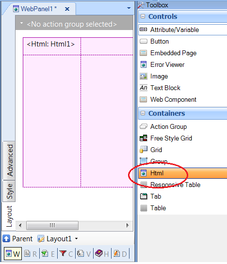

The HTML container allows to drag an HTML form to an Abstract layout. The HTML form is edited using the HTML Editor. HTML container propertiesThe HTML container can be dragged to an abstract layout, as shown in the following figure: 
|
| Backlinks |
| Add Layout as Root Form |